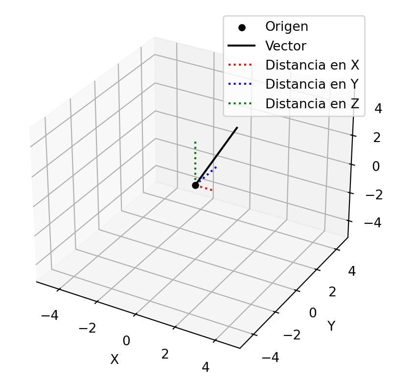

import numpy as np
v = np.array([[1], [2], [3]])
print(v)[[1]
[2]
[3]]Un vector \(v\) de tamaño \(n \times 1\) se puede escribir como:
\[ v = \begin{bmatrix} v_1 \\ v_2 \\ \vdots \\ v_n \end{bmatrix} \]
donde \(v_i\) es el \(i\)-ésimo elemento del vector \(v\). Un vector se puede representar como una matriz de una sola columna. Por ejemplo, el vector \(v = \begin{bmatrix} 1 \\ 2 \\ 3 \end{bmatrix}\) se puede representar como la matriz \(A = \begin{bmatrix} 1 & 0 & 0 \\ 0 & 2 & 0 \\ 0 & 0 & 3 \end{bmatrix}\).
En python se puede escribir un vector como una lista o como un array de numpy. Por ejemplo, el vector \(v = \begin{bmatrix} 1 \\ 2 \\ 3 \end{bmatrix}\) se puede escribir como:
import numpy as np
v = np.array([[1], [2], [3]])
print(v)[[1]
[2]
[3]]otra forma de escribirlo es como un array de numpy de una sola fila y tres columnas:
import numpy as np
v = np.array([1, 2, 3])
v=v.reshape(3, 1)
print(v)[[1]
[2]
[3]]Operaciones con vectores
Sea \(v_1 = \begin{bmatrix} 1 \\ 2 \\ 3 \end{bmatrix}\) y \(v_2 = \begin{bmatrix} 4 \\ 5 \\ 6 \end{bmatrix}\), entonces la suma de los vectores \(v_1\) y \(v_2\) se define como:
\[ v_1 + v_2 = \begin{bmatrix} 1 \\ 2 \\ 3 \end{bmatrix} + \begin{bmatrix} 4 \\ 5 \\ 6 \end{bmatrix} = \begin{bmatrix} 1 + 4 \\ 2 + 5 \\ 3 + 6 \end{bmatrix} = \begin{bmatrix} 5 \\ 7 \\ 9 \end{bmatrix} \]
Sea \(v = \begin{bmatrix} 1 \\ 2 \\ 3 \end{bmatrix}\) y \(k = 2\), entonces la multiplicación del vector \(v\) por el escalar \(k\) se define como:
\[ kv = 2 \begin{bmatrix} 1 \\ 2 \\ 3 \end{bmatrix} = \begin{bmatrix} 2 \\ 4 \\ 6 \end{bmatrix} \]
\[ k(v_1 + v_2) = kv_1 + kv_2 \] 5. La multiplicación de un vector por un escalar es conmutativa: \[ kv_1 = v_1k \]
Sea \(v_1 = \begin{bmatrix} 1 \\ 2 \\ 3 \end{bmatrix}\) y \(v_2 = \begin{bmatrix} 4 \\ 5 \\ 6 \end{bmatrix}\), entonces el producto punto de los vectores \(v_1\) y \(v_2\) se define como:
\[ v_1 \cdot v_2 = \begin{bmatrix} 1 \\ 2 \\ 3 \end{bmatrix} \cdot \begin{bmatrix} 4 \\ 5 \\ 6 \end{bmatrix} = 1 \cdot 4 + 2 \cdot 5 + 3 \cdot 6 = 4 + 10 + 18 = 32 \]
Estas operaciones las podemos realizar en python de la siguiente manera:
import numpy as np
v1 = np.array([[1], [2], [3]])
v2 = np.array([[4], [5], [6]])
suma = v1 + v2
multiplicacion = 2 * v1
producto_punto = np.dot(v1.T, v2)
print("Suma de vectores:", suma)
print("Multiplicación de un vector por un escalar:", multiplicacion)
print("Producto punto de dos vectores:", producto_punto)Suma de vectores: [[5]
[7]
[9]]
Multiplicación de un vector por un escalar: [[2]
[4]
[6]]
Producto punto de dos vectores: [[32]]Dos vectores \(v_1\) y \(v_2\) son ortogonales si su producto punto es cero:
\[ v_1 \cdot v_2 = 0 \]
La norma de un vector \(v\) se define como la longitud del vector. La norma de un vector se puede calcular utilizando la siguiente fórmula:
\[ ||v|| = \sqrt{v_1^2 + v_2^2 + \ldots + v_n^2} \]
La norma de un vector se puede calcular en python utilizando la función numpy.linalg.norm(). Por ejemplo, la norma del vector \(v = \begin{bmatrix} 1 \\ 2 \\ 3 \end{bmatrix}\) se puede calcular de la siguiente manera:
import numpy as np
v = np.array([[1], [2], [3]])
norma = np.linalg.norm(v)
print("Norma del vector:", norma)Norma del vector: 3.7416573867739413La norma de un vector en \(R^N\) se puede interpretar como la distancia entre el origen y el punto representado por el vector en el espacio euclidiano. Por ejemplo en \(R^3\) la norma de un vector \(v = \begin{bmatrix} 1 \\ 2 \\ 3 \end{bmatrix}\) se puede interpretar como la distancia entre el origen \((0,0,0)\) y el punto \((1,2,3)\) en el espacio tridimensional. Esta distancia se puede calcular utilizando la fórmula de la distancia euclidiana:
\[ d = \sqrt{(x_2 - x_1)^2 + (y_2 - y_1)^2 + (z_2 - z_1)^2} \]
Veamos la siguiente animación en python:
import numpy as np
import matplotlib.pyplot as plt
from mpl_toolkits.mplot3d import Axes3D
# Create the figure and 3D axis
fig = plt.figure()
ax = fig.add_subplot(111, projection='3d')
# Initial vector
v = np.array([1, 2, 3])
# Plot the origin
ax.scatter(0, 0, 0, color='black', label='Origen')
# Plot the initial vector
ax.plot([0, v[0]], [0, v[1]], [0, v[2]], label='Vector', color='black')
# Plot projections on each axis
ax.plot([0, v[0]], [0, 0], [0, 0], label='Distancia en X', color='red', linestyle='dotted')
ax.plot([0, 0], [0, v[1]], [0, 0], label='Distancia en Y', color='blue', linestyle='dotted')
ax.plot([0, 0], [0, 0], [0, v[2]], label='Distancia en Z', color='green', linestyle='dotted')
# Set axis limits
ax.set_xlim([-5, 5])
ax.set_ylim([-5, 5])
ax.set_zlim([-5, 5])
# Add labels
ax.set_xlabel('X')
ax.set_ylabel('Y')
ax.set_zlabel('Z')
# Show the plot
plt.legend()
plt.show()
La norma de un vector se puede calcular utilizando el producto punto de la siguiente manera: \[ ||v|| = \sqrt{v \cdot v}=\sum_{i=1}^{n} v_i^2 \]
Encuentra la norma del vector \(v = \begin{bmatrix} 1 \\ 2 \\ 3 \end{bmatrix}\) utilizando la definición de norma y el producto punto.
La desigualdad de Cauchy-Schwarz establece que para cualquier par de vectores \(u\) y \(v\) en un espacio euclidiano, se cumple la siguiente desigualdad:
\[ |u \cdot v| \leq ||u|| \cdot ||v|| \]
Compruebe la desigualdad de Cauchy-Schwarz para los vectores \(para los vecores en\)R^4$ \(u = \begin{bmatrix} 1 \\ 2 \\ 3 \\ 4 \end{bmatrix}\) y \(v = \begin{bmatrix} 5 \\ 6 \\ 7 \\ 8 \end{bmatrix}\).
El producto cruz de dos vectores \(u\) y \(v\) en \(R^3\) se define como un nuevo vector que es ortogonal a ambos vectores. El producto cruz se denota como \(u \times v\) y se calcula utilizando la siguiente fórmula: \[ u \times v = \begin{vmatrix} \hat{i} & \hat{j} & \hat{k} \\ u_1 & u_2 & u_3 \\ v_1 & v_2 & v_3 \end{vmatrix} = \begin{bmatrix} u_2v_3 - u_3v_2 \\ u_3v_1 - u_1v_3 \\ u_1v_2 - u_2v_1 \end{bmatrix} \] donde \(\hat{i}\), \(\hat{j}\) y \(\hat{k}\) son los vectores unitarios en las direcciones \(x\), \(y\) y \(z\) respectivamente.
Una recta en \(R^3\) se puede definir como el conjunto de puntos que satisfacen la ecuación paramétrica:
\(L(t)=v+tu\)
Ejemplo el calculo de que pasa por el punto \[v=(1,2,3)\] y tiene como vector directriz \[v=[1,2,0]\] es
\[L(t)=(1+t,2+t,3)\]
Ademas podemos calcular la ecaución simetricas para esto igualamos cada elemento
\[1+t=x\] \[2+t=y\] \[3=z\]
ahora
\[x-1=y-2,\ z=3\]